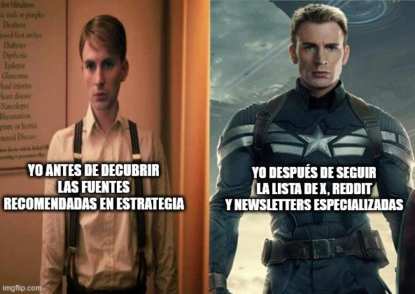

estrategIA #73 ·
La transformación empieza por las fuentes
El contexto
El número explicaba cómo se prepara estrategIA y compartía fuentes para seguir la IA. La transformación de Steve Rogers en Capitán América exagera la ganancia de estar informado: leer listas, comunidades y newsletters especializadas se convierte en un entrenamiento de superhéroe.
Publicado en: estrategIA #73 Cómo se hace estrategIA: nuestra receta para estar al día en IA (y cómo replicarla)
Leer el texto de la imagen
YO ANTES DE DESCUBRIR LAS FUENTES RECOMENDADAS EN ESTRATEGIA YO DESPUÉS DE SEGUIR LA LISTA DE X, REDDIT Y NEWSLETTERS ESPECIALIZADAS
Marca de la herramienta visible en el original: imgflip.com.